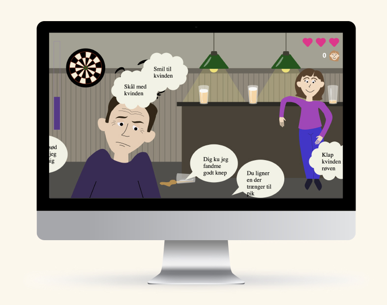

TEMA 2 - GRUNDLÆGGENDE WEB
På temaet ”Grundlæggende web” har jeg fået kendskab til programmer som Adobe XD og Adobe Photoshop og lært at navigere rundt i disse. Vi blev introduceret til forskellige stilarter, og min gruppe arbejdede med ”Flat design”, vi lærte om ”moodboard” og ”styletile”, og hvordan man ved hjælp af disse kan skabe et overblik over udtryk og stil, og på den baggrund tage stilistiske beslutninger om ens design eller blive bevidst om andres design-elementer.
Derudover har jeg lært det basale fundament for at kunne sætte en hjemmeside op med HTML og CSS, og gøre den responsiv. På baggrund af den viden, jeg har tilegnet mig på tema 2, har jeg lavet opgaven 02.04.02 responsive_site_v2 Se Her
TEMA 3 - GRUNDLÆGGENDE UX
På dette tema har jeg lært, hvordan jeg ved at via forskellige former for research og interviews kan indsamle vigtige data om brugere og brugssituationer, som jeg kan anvende i mit design og bruge til at understøtte mit design. Ydermere har jeg lært forskellige om dele af designprocessen, som wireframes, skitse-øvelser, og de forskellige faser i en designproces: research – idéer – løsninger – test. Grundlæggende handlede temaet om brugerens oplevelse, og hvordan man giver en god bruger oplevelse. Under dette forløb skulle vi lave en prototype i Adobe XD på en hjemmeside, som solgte t-shirts.
IDÉ
Målgruppe: primærtkvinder, 20-35 år
Produkter: high-end - kvalitet, venne-t-shirts, - t-shirtsne skal være hvide med en lille detalje i form af noget mønster i perler, fx en østers, et hjerte, en burger, håndlavet, så hver t-shirt bliver unik ligesom hvert venskab er unikt, unisex t-shirts, der fås i alle størrelse.
Afsender: synlig afsender, som skal skabe et tættere “forhold” mellem køber og sælger, evt. en håndskrevet note fra afsender.
USP: web-site med venskab i fokus, produktet skal hylde venskaber, og det gode venskab, meningen er, at man skal købe minimum to, en til dig og en til din ven, for hvert køb går 25 kr. til en organisation, der hjælper ensomme unge.
Problemstillinger: svært og dyrt med håndlavede perlemønstre, hvordan får man kunderne til at tage emnet seriøst, skal det kun være muligt at købe 2 eller flere? vil målgruppen faktisk købe en t-shirt til en ven eller bare to til sig selv?
Problemstillinger i andre webshops: mange brands og mærker har ikke et særlig stort størrelsesudvalg, og mange bliver derfor ekskluderet, jeg vil gerne lave et produkt og et brand, der inkluderer alle størrelser, også i markedsføringen, vil jeg have fokus på diversitet og inklusion.
SKITSER
PITCH
Vi kan alle sammen huske, da vi var små, var der mange særligt piger, som gik meget op i hvem der var deres bedsteven, og samtidig gik man meget op i, at vise det, og rigtig mange, i hvert i min folkeskole, købte venindehalskæder, armbånd og andre ting. Og netop denne måde, at vise at man sætter pris på hinanden som venner, har jeg ladet mig inspirere af.
Men imodsætning til folkeskolen, man måske kunne skifte ”bedste”ven hver uge, ville jeg gerne hylde de stærke og vedvarende relationer, og derfor ville jeg lave en unik, miljøbevidst og kvalitets venne-t-shirt.
I min desk research fandt jeg ud af, at mange dyre brands med kvalitet i højsædet, ofte gjorde brug af hvid på deres hjemmeside, måske for at skabe ro og formidle seriøsitet og kvalitet.
I min survey undersøgelse, fandt jeg ud af, at langt overhalvdelen af de adspurgte var lidt enige eller helt enige i, at det var vigtigt for dem at deres tøj var af god kvalitet og bæredygtigt. Så det har jeg taget med i mit design.
Mit brand eller min webshop, har jeg valgt at kalde ”unikke venskaber”, og det lægger jo ikke op til, hvad jeg egentlig vil sælge, men jeg har valgt det, fordi mit mål var at sætte fokus på venskaber og at det skulle være omdrejningspunktet for mit design og idé, t-shirten er altså sekundær.
Min målgruppe er unge kvinder i alderen 15-35.
”Slogan” en unik gaveidé til unikke venskaber – gaveidé er et keyword, hjemmesiden skal komme op, når en potentiel kunde, søger efter gaveidé.
Min t-shirt er egentlig meget basic, den er helt hvid, men det der gør den unik er, at man selv vælger et unikt mønster, der skal side på trøjen, som er håndsyet, og på den måde er hver t-shirt unik.
Et unikt selling point jeg har er, at man skal købe mindst 2 t-shirts, fordi konceptet er, at man køber en til sig selv og en til en ven, man holder meget af. Et andet USP er, at for hver t-shirt, der bliver solgt går 25 kr. til en organisation, der kæmper for at komme ensomhed blandt unge til livs.
Hjemmesiden mangler stadig nogle elementer. Det fremgår ikke nogen steder, at man skal købe to t-shirts. Splash-billedet, skulle være med to venner på. Mere fokus på ”projekt: ensomme unge” og donationen.
TEMA 4 - GRUNDLÆGGENDE ANIMATION
Det fjerde tema byggede videre på de to foregående temaer, og vi har på dette tema arbejdet med at koble web og UX sammen. Vi blev introduceret til Java Script, aktivitetsdiagrammer, statemachinediagrammer, og jeg har på den baggrund lært at opsætte interaktive brugergrænseflader, som både aktiverer og motivere brugeren. Vi har i dette tema også fokuseret på det visuelle udtryk af de grafiske elementer, som vi har arbejdet med i Adobe Illustrator. Produktet af animationstemaet er et spil, som jeg har kodet i HTML, CSS og Javasctriot og tegnet i Adobe Illustrator.
DESIGNDOKUMENTATION
ASSETLISTE


PITCH
Feminisme, sexisme, ligestilling, krænkelse og samtykke. Ord, der præger debatten, de sociale medier, TV-avisen og snakken hen over aftensmaden. Flere og flere kvinder står modigt frem og fortæller om forfærdelige oplevelser, de har haft med mænd, der har krænket dem. Der er dem, der støtter op om disse kvinder, lytter og giver dem high-five og et tak for at stå frem. Og så er der dem, som synes, at de her krænkelse er noget sludder, og at man i dagens Danmark ikke længere kan give et kompliment uden af krænke nogen.
Netop dette tager mit spil udgangspunkt i og ikke nok med, at det er et spil, er det også en guide, en læringsplatform og vink med en vognstang for dummies, der er i tvivl om, hvad der er et kompliment, og hvad der er en krænkelse. Et spil, hvor du bare skal bruge din sunde fornuft, præcis som du skal ude i virkeligheden.
Pointen med spillet er, at det skal være nemt at gennemføre, hvis du forstår, hvordan man interagerer med et fremmed menneske ude i byen, som man gerne vil i kontakt med. I mit spil, er det temaet, der er i fokus, og det må meget gerne provokere. Både ved at være utrolig let, og ved at have nogle spydige kommentarer.
Helt konkret i spillet, skal du trykke på nogle talebobler, der indeholder forskellige måde, hvorpå du kan komme i kontakt med en kvinde, der står oppe i en bar. Hvis du vælger noget krænkende, taber du, for du har kun et liv, ligesom du ude i det virkelige liv kun har en chance til at give et godt første-håndsindtryk. Du har 10-15 sekunder til at vælge så mange talebobler som muligt, jo flere rigtige, du vælger, jo flere point får du.
Prøv det færdige spil Tryk Her
TEMA 5 - GRUNDLÆGGENDE INDHOLD
Semesterets sidste tema: grundlæggende indhold, blev der igen bygget videre på den viden, vi havde tilegnet os på de forgangne temaer. Jeg har lært om optagelse og redigering af video og lyd med Premiere Pro, og redigering af billeder i Photoshop. Derudover har jeg lært om rettigheder og regler i digital medieproduktion. På den baggrund har jeg i samarbejde med min gruppe bl.a. lavet et pilot-projekt, og et redeign-projekt, hvor vi har et redesign af butikken Mint Records hjemmeside.
PILOT-PROJEKT
I vores pilot-projekt har vi interviewet kokken David, der fortæller om sin passion for mad. Du kan se det færdige resultat Her.
REDESIGN OG TEMADOKUMENTATION
I vores redesign-projekt har vi i fællesskab lavet et redesign af Mint Records hjemmeside. Vi har bl.a. lavet et interview i form af en video, indsamlet data ved BERT-test, som vi har brugt i vores desginproces, kodet siden i HTML, CSS og Javascript og taget og redigeret billeder til hjemmesiden. Den færdige hjemmeside, kan du se Her.
I vores styletyle og moodboard har vi taget udgangspunkt i at skabe en stemning af autensitet og slow-living. Vi har udvalgt nogle lidt mere afdæmpede farver, for at komme væk fra det lidt discount-lignende udtryk siden havde. Vi har valgt forsat bruge en ”mint” farve pga. navnet. Derudover ville vi gerne modernisere hjemmesiden, men samtidig holde fest i det retro look. Det har vi gjort ved at skabe mere ro på siden, mindre information og mere whitespace. Vi ville dog gerne have haft flere stemningsbilleder på siden, som vi har med i vores moodboard, men det var der ikke mulighed for at tage sådanne billeder i butikken.
Konklusionen på Bert-testen var at hjemmesidens indhold gav indtrykket af virksomheden bagved var afslappet. Siden var ubestemt i hvilken målgruppe den henviste sig til. Men selve design, det visuelle udtryk og moderniteten, var simpelt, behersket og gammeldags. Derfor ville vi også prøve at lægge os op af det stilmæssige udtryk. Men samtidig give hjemmesiden et løft med layout og design, for at optimere det visuelle udtryk på siden